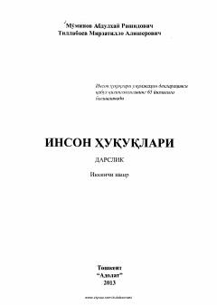

IHInson huquqlari fanining nazariy va amaliy asoslariga bag'ishlangan o'quv darsligi.
Ushbu darslik inson huquqlari fanining predmetini o'rganishga bag'ishlangan bo'lib, unda inson huquqlari tushunchasi, tarixi va rivojlanish bosqichlari, shuningdek xalqaro va milliy huquqiy normalar yoritilgan. Kitob talabalar, o'qituvchilar, ilmiy tadqiqotchilar va keng kitobxonlar ommasiga mo'ljallangan.